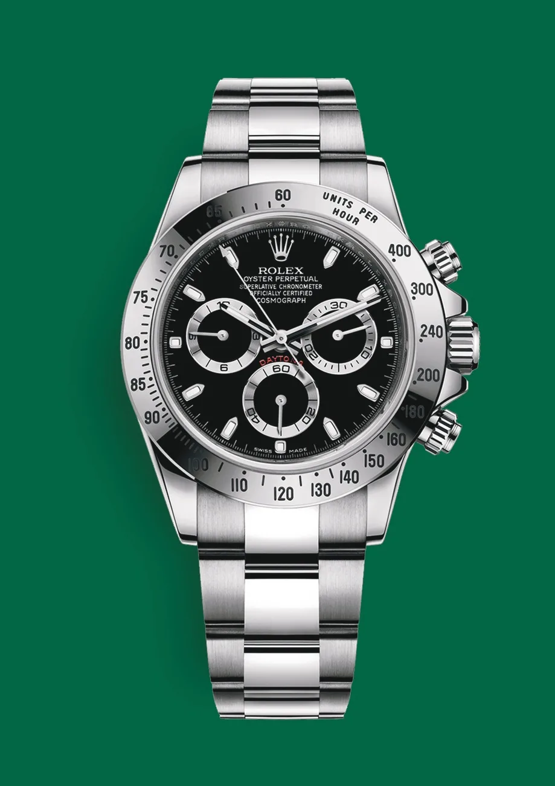
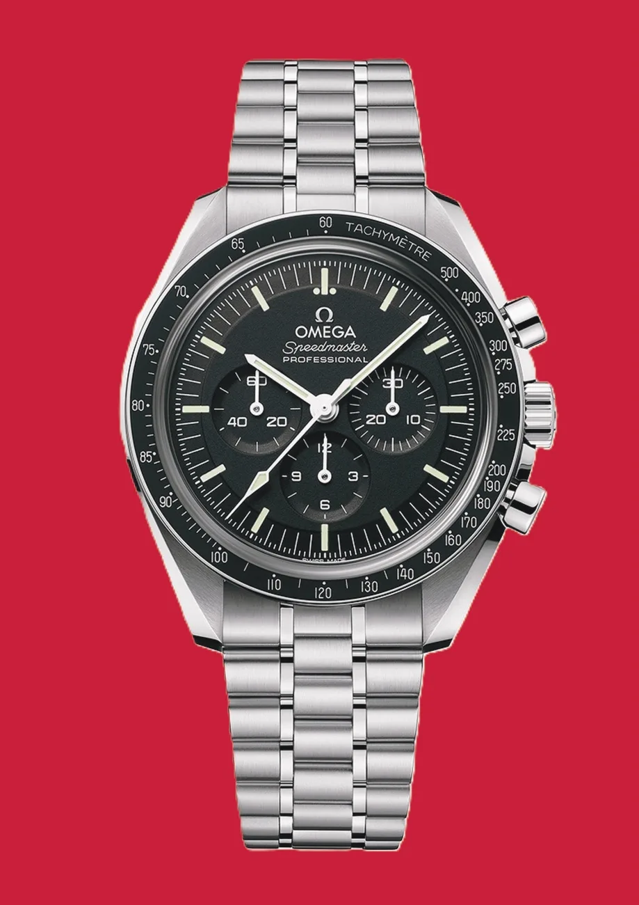
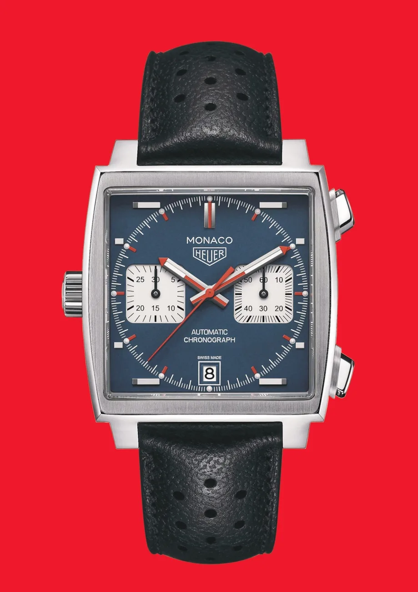
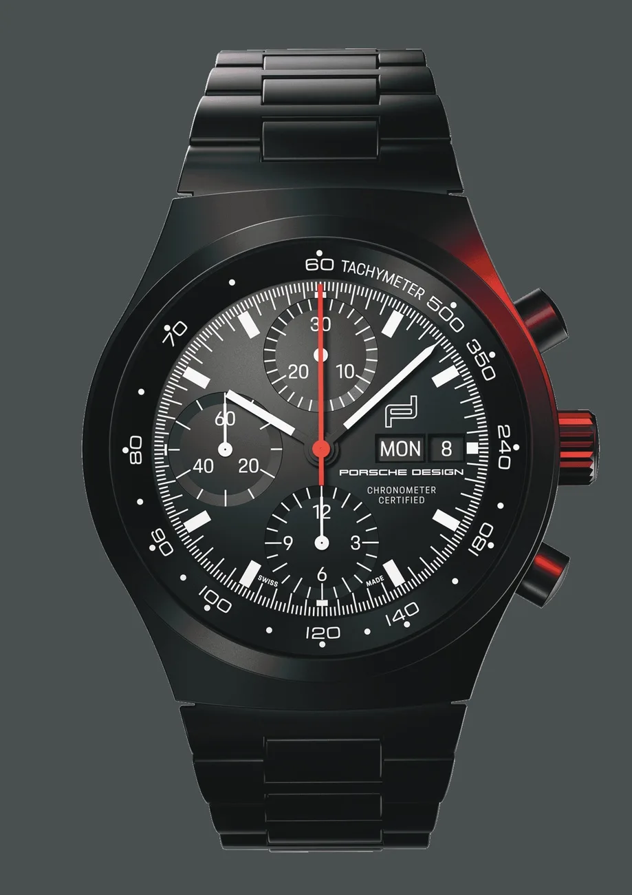
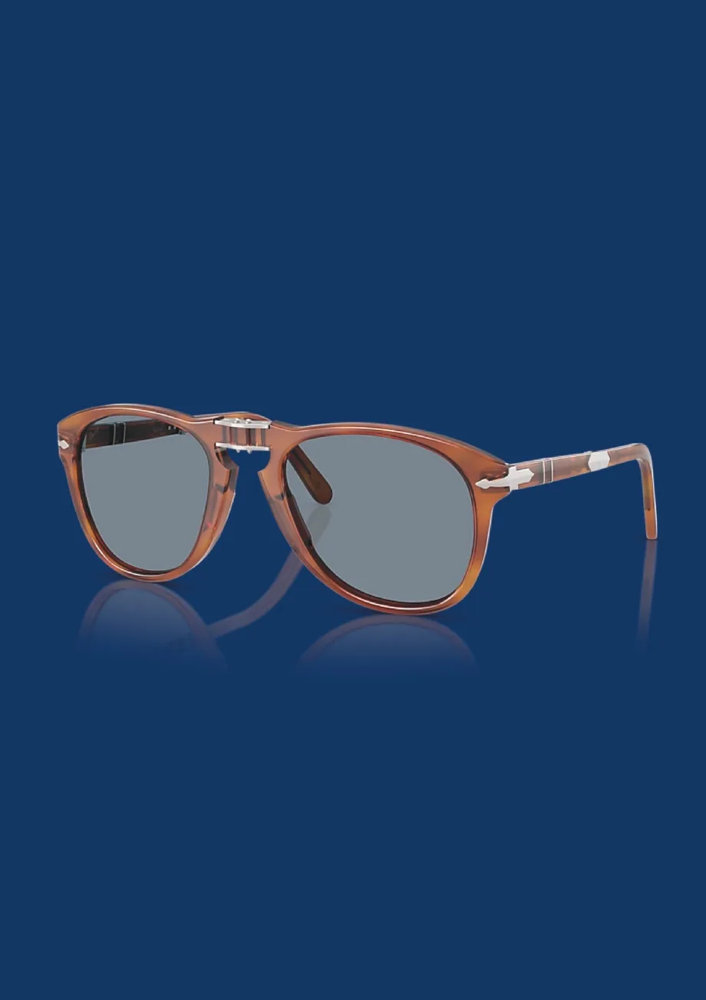
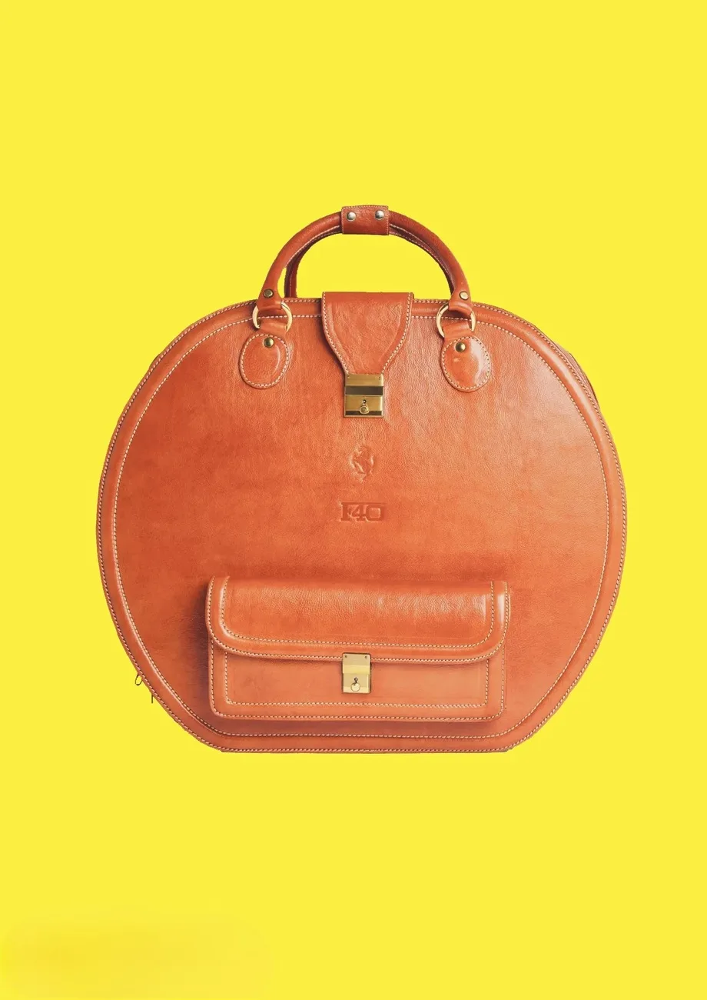
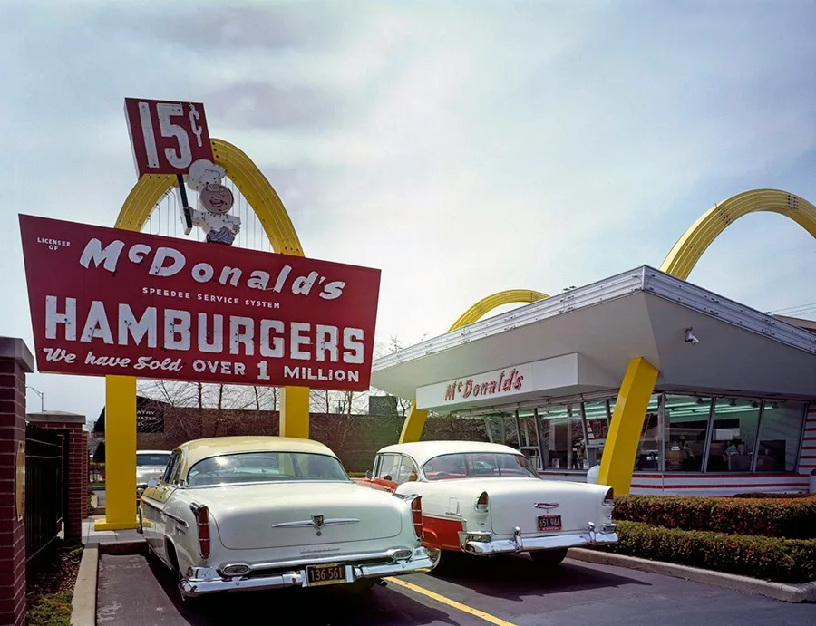
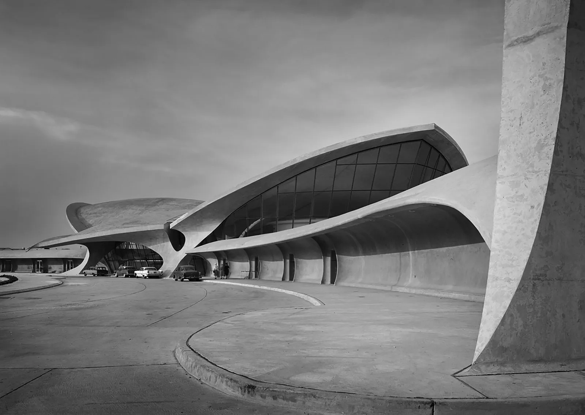
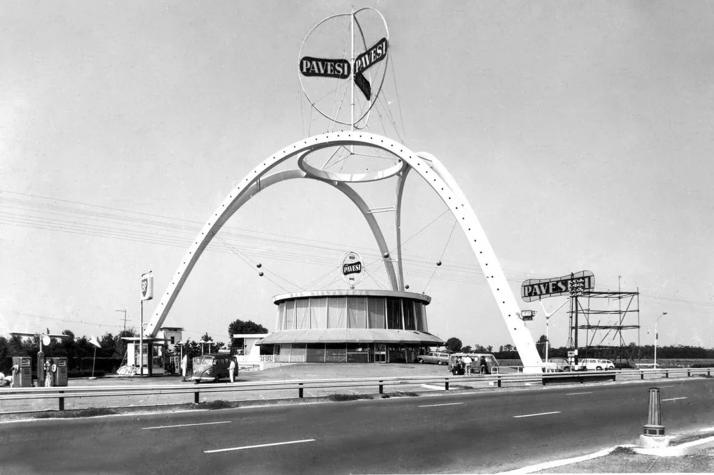
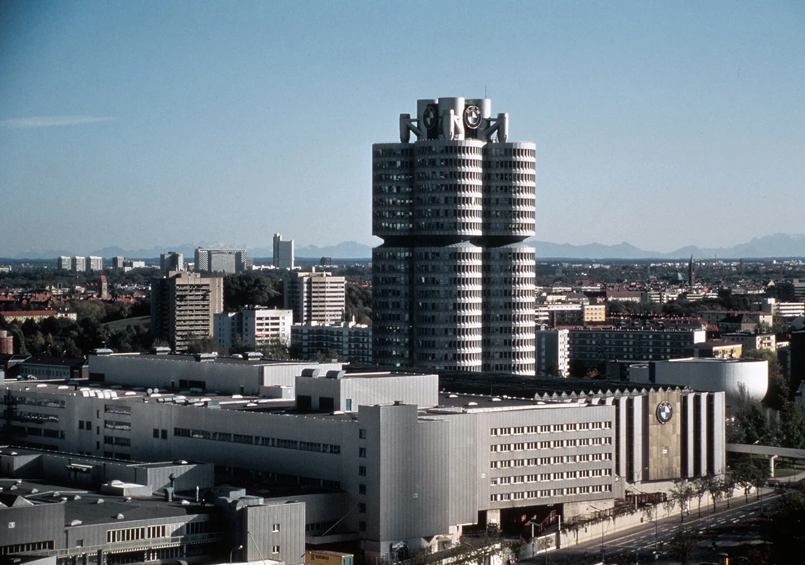

01
‹ Volver al TFG
Bloque 03 de 03
Influencia como objeto industrial
De los relojes de Steve McQueen a la sede de BMW: cuando la estética del motor contagia todo lo demás.
La profunda transformación estética del automóvil deportivo de los 60 no se quedó en el asfalto: empapó la cultura material cotidiana. Apodado el 'King of Cool', Steve McQueen personificaba el 'cool funcional', rechazando el lujo y aceptando los objetos por su rendimiento y fiabilidad.
El diálogo definitivo entre automovilismo y arquitectura se materializa en la sede global de BMW en Múnich, diseñada por Karl Schwanzer: una torre de cuatro grandes cilindros suspendidos que es una metáfora visual de un motor de cuatro cilindros en línea.
Y muchos más objetos e iconos —relojes, gafas, arquitectura— en el libro completo.
Relojería y accesorios

02Omega Speedmaster
Nacido en 1957 con un origen estrictamente automovilístico, su cristal de Hesalite —que se agrieta pero nunca astilla— lo hizo apto para el espacio y le valió el título de "Moonwatch" de la NASA.
03TAG Heuer Monaco
En 1969 rompió los moldes con su caja cuadrada y la corona movida a las 9, una rareza técnica para albergar el primer cronógrafo automático del mundo. Steve McQueen lo inmortalizó en la película "Le Mans".
04Porsche Design Chronograph
Creado por Ferdinand Porsche, nieto del diseñador del Beetle, fue el primer reloj de pulsera totalmente negro producido en serie y, más tarde, el primero fabricado por completo en titanio.
05Persol 714
Evolución de las icónicas 649 para los tranvías de Turín, estas gafas plegables se pensaron como equipo de protección para conductores. Steve McQueen las elevó a icono de moda en "The Thomas Crown Affair".
06Equipaje Schedoni para Ferrari
Con la llegada del motor central en los deportivos Ferrari, desaparecieron los maleteros tradicionales. Schedoni resolvió el reto con maletas de cuero a medida, encajadas como un Tetris en los huecos irregulares del chasis.Arquitectura

01Estilo Googie
El optimismo de la Era Espacial se coló en la arquitectura americana con cubiertas inclinadas, grandes cristaleras y neones pensados para captar la atención al volante. La Casa Elrod de John Lautner y los primeros McDonald's son su máxima expresión.
02Terminal TWA (Eero Saarinen)
Inaugurada en 1962 en el aeropuerto JFK, sus estructuras abovedadas de hormigón imitan el vuelo de un pájaro. Sus interiores fluidos, libres de ángulos rectos, hablan el mismo lenguaje de flujo continuo que las carrocerías de la época.
03Autogrill Pavesi (Angelo Bianchetti)
Más que una parada de carretera, este edificio de 1958 fue un símbolo del boom económico italiano y la pasión por la velocidad. En 2020 se renovó con tecnologías ecológicas, demostrando que el buen diseño no pasa de moda.
04